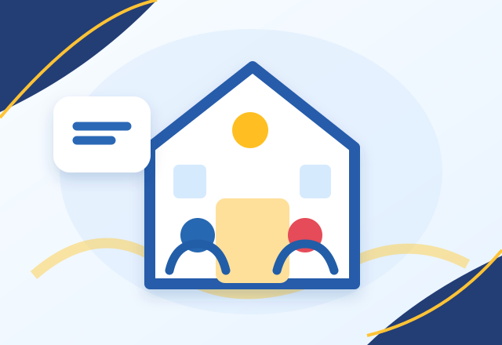
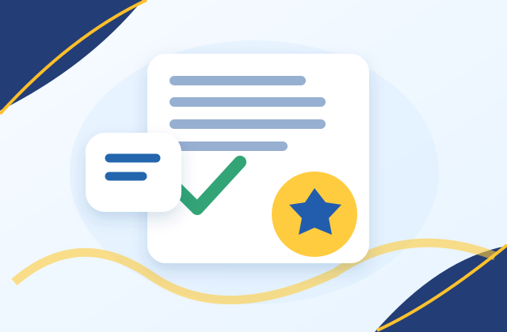

Associação
Missão, equipa e participação das famílias.
Saber mais →A Associação de Pais e Encarregados de Educação do Bairro do Restelo. Ao lado das famílias, das crianças e da escola.
Informação organizada, acessível e útil para o dia a dia da comunidade escolar.
Missão, equipa e participação das famílias.
Saber mais →Conheça os compromissos para 2026/2027 e os seus objetivos.
Saber mais →Comunicados e atividades, sem perder informação importante.
Saber mais →
AEC, CAF, escola, apoio social e recursos úteis.
Saber mais →Preservamos a memória do trabalho feito ao longo dos anos.
Saber mais →
Estatutos, atas e transparência institucional.
Saber mais →Do minibasquete e acolhimento de 2025/2026 às festas, projetos de leitura, iniciativas solidárias e atividades de outros anos: conheça o trabalho das famílias que nos antecederam.
Conheça as famílias que integram os órgãos sociais da Associação de Pais.
A Lista A+ venceu as eleições de 2026. Agora, a prioridade é servir toda a comunidade escolar, mantendo a identidade de proximidade e os compromissos apresentados.
Ver compromissos →